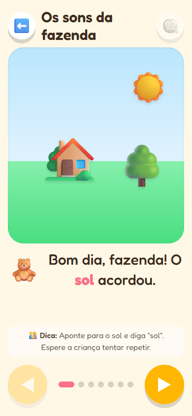
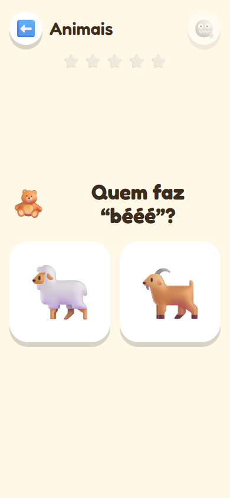

Histórias para o seu bebê aprender a falar
Histórias com sons de bichos, cores e números para ler junto com a criança, de 0 a 4 anos. A voz do app conta, a criança toca e repete.
- ✅ Grátis
- 🚫 Sem anúncios
- 🌎 4 idiomas
- 📶 Funciona sem internet


O que tem no app
20 histórias
Bichos, cores, números e a rotina do dia (banho, comida, roupa). Toque em cada coisa para ouvir o nome e o som.
Brincadeiras
“Cadê a vaca?”, cores e números: a criança procura, toca e ganha festa a cada acerto.
Soninho
Histórias calminhas para a hora de dormir, em tela escura e com um timer que encerra sozinho.
Sons de verdade
27 bichos com sons gravados de verdade: vaca, leão, sapo, baleia…
Por idade
Sugestões para cada fase, de 0 a 4 anos, e dicas para estimular a fala fora da tela.
4 idiomas
Português, inglês, espanhol e francês: ótimo para famílias bilíngues.
Feito para usar junto
No colo
O app foi pensado para o adulto e a criança juntos: você aponta, repete e conversa sobre a figura.
Pouquinho por vez
Sessões curtas, com um lembrete gentil de pausa, seguindo as recomendações de tempo de tela para cada idade.
Sem cadastro obrigatório
Abra e use. A conta é opcional, só para guardar o progresso. Nada de anúncios nem de dados da criança.
Como instalar no celular
📱 iPhone / iPad
- Abra falafalinha.com no Safari.
- Toque em Compartilhar (o quadrado com a seta).
- Escolha Adicionar à Tela de Início.
🤖 Android
- Abra falafalinha.com no Chrome.
- Toque no menu ⋮.
- Escolha Instalar app (ou Adicionar à tela inicial).
Perguntas frequentes
É grátis mesmo?
Sim. Abra e use, sem cartão e sem cadastro.
Para qual idade?
De 0 a 4 anos. O app sugere histórias e brincadeiras para a fase da criança.
Precisa de internet?
Só na primeira vez. Depois de instalado, funciona até no modo avião.
Tem anúncios ou compras?
Não. E não coletamos dados da criança. A medição de uso é anônima e só acontece se o adulto permitir.
Para que serve a conta?
É opcional: guarda o progresso (histórias e brincadeiras feitas) para continuar em outro aparelho.
Vamos contar uma história?
Leva 10 segundos para começar.
Abrir o app grátis